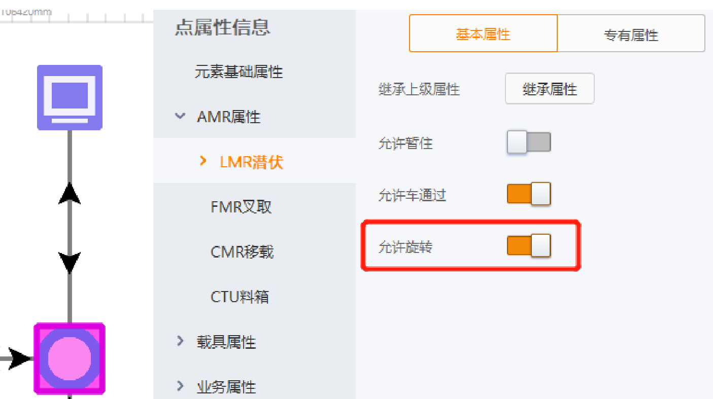
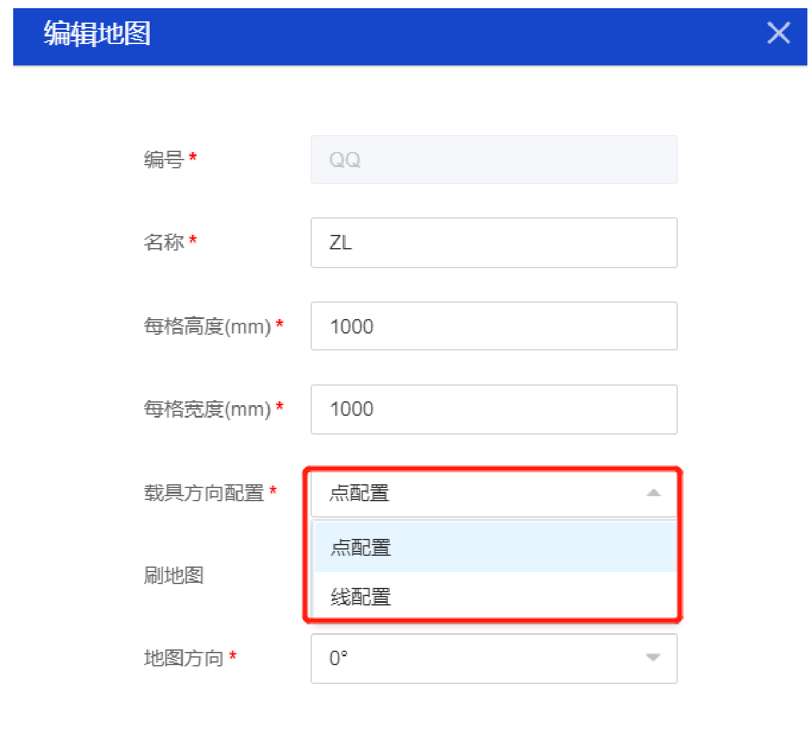
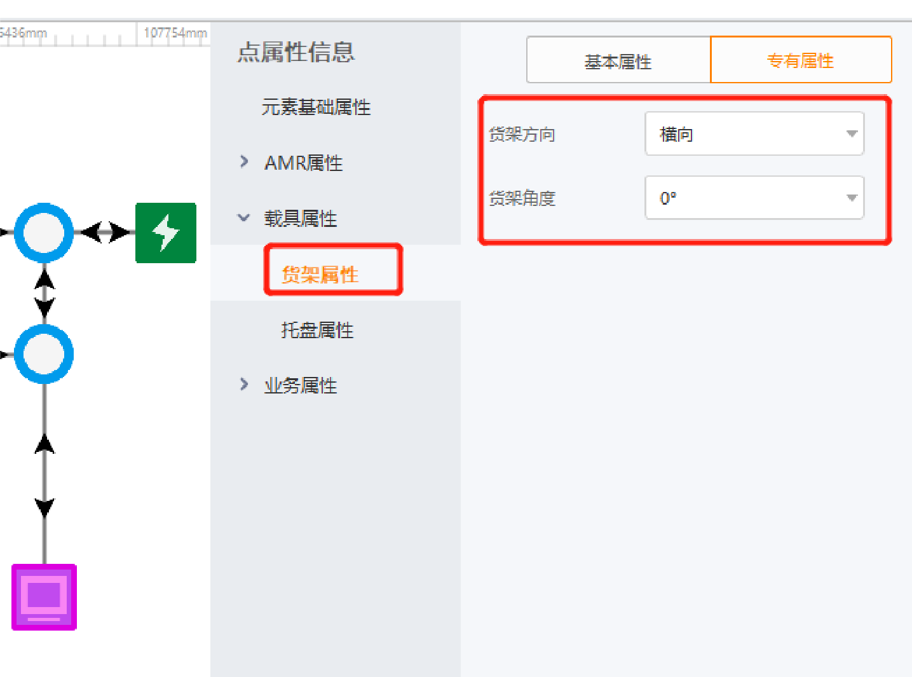
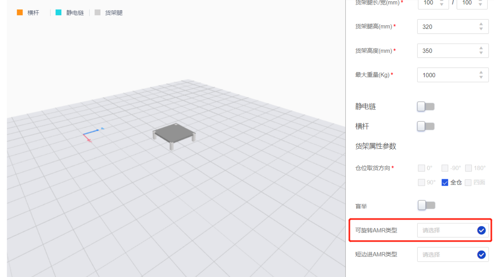
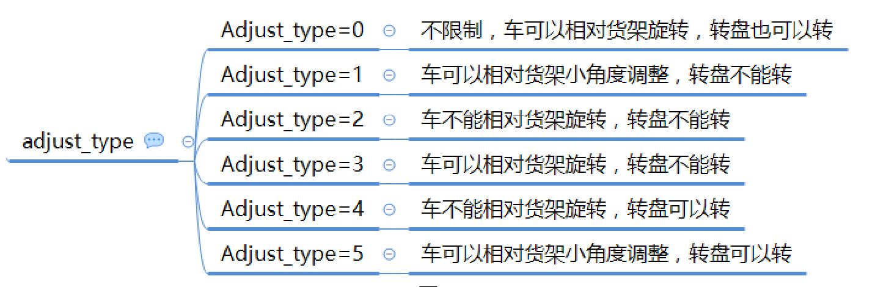

机器人点位方向与货架方向配置
点位方向、货架方向、旋转控制三套参数最容易混，配错时车头、货架朝向和举升姿态会一起出错。倒车进点与 A 横转 B 竖两个实操，讲清取值、点配置与线配置的选择条件及 adjust_type 六种组合。
地图与定位目录
适用于按载具方向配置做点位与货架方向选型的实施人员，内容取自内部操作手册 V4.0；若现场控制器或货架参数不同，仍以实测进点与举升姿态为准。
三套参数各管什么
这三个概念作用的对象不同，配错时表现也不同，先分清再动手：
- 点位方向：机器人进入该点后车头相对地图坐标系的方向，只对任务目标点有效，途经点不生效。
- 货架方向：货码 x 轴相对地码 x 轴的方向。实施规范要求货架长边平行于货码 x 轴；它写在点上（点配置）或线上（线配置），由新建地图时的「载具方向配置」决定。
- 旋转控制：由点属性（AMR 允许旋转、货物允许旋转）、货架结构（可旋转 AMR 类型）组合而成，最终以
adjust_type下发给机器人。
① 这个点要不要固定车头？② 这个点要不要固定货架朝向？③ 机器人允不允许在货架下自己转？三问分别对应点位方向、货架方向、旋转控制，互不替代。
点位方向：取值与判断依据
点位方向以地码坐标系为基准，进入时若与预设不一致，进入后会旋转到设定方向。取值共 7 种：
| 点位方向 | 描述 |
|---|---|
| 默认 | 该点车头朝向由任务决定 |
| 横向 | 车头与地码 x 轴同方向 |
| 纵向 | 车头与地码 y 轴同方向 |
| 0 | 车头与地码 x 轴正方向同向 |
| 90 | 车头与地码 y 轴正方向同向 |
| -90 | 车头与地码 y 轴负方向同向 |
| 180 | 车头与地码 x 轴负方向同向 |
「横向 / 纵向」只约束到轴，「0 / 90 / -90 / 180」约束到具体朝向。需要倒车、需要固定朝向来对接输送线或站台的场景，用带符号的角度值。
实操：让机器人在 A 点转好、倒退进入 B 点
需求：机器人行驶到 A 点后，以后退方式从 A 点进入 B 点。要点是在 A 点把车头转到 -90°，在 B 点禁止旋转。
- 根据机器人编号确认机型：进入「AMR 配置 > AMR 添加」，查找到执行任务的机器人类型。
- 编辑 A 点的 LMR 潜伏属性，开启「允许旋转」，确保执行任务的机器人可在 A 点旋转。
- 编辑 B 点的「点位方向」为 -90°，并关闭「允许旋转」，保证机器人不在 B 点旋转。
- 在监控客户端下发从 A 到 B 的移动命令，观察进点姿态。

只把 B 点设成 -90° 是不够的：B 点必须同时关闭「允许旋转」，否则机器人会先正向驶到 B 点，再在 B 点转到 -90°。
点位方向的三条 FAQ 判断
- A 点设成不可旋转会怎样？机器人会提前到 A 点之前的那个点完成旋转，再从 A 点倒退进 B。此时 A 的点位方向对任务没有影响——即便设了方向，机器人仍会在 A 点前转成 -90° 再进入 B。
- A、B 都设 -90° 就够了吗？不够。B 点还需配置不可旋转，否则仍会正向行驶到 B 点再旋转。
- 把 A→B 的线设为「线上旋转」能让机器人在线上转吗？不能。线属性的「线上旋转」是给机器人掉头用的，无法让车在线上完成姿态调整。
判断依据统一为：旋转发生在前一个仍允许旋转的点上。所以「倒车进点」的配置永远是「前点可转 + 目标点定向且不可转」这一对。
货架方向：先定用点配置还是线配置
新建地图时，在地图属性中选「载具方向配置」，默认是点配置。以下四类场景必须选点配置：
- 开启刷地图（放下货架时该点被动态改写为储位：空车可穿过、背货架不可穿过；抬起货架时改写为道路）。
- 货架短边不可进。
- 由第三方系统控制货架方向。
- 对接上游仓储系统管理货架。

点配置下的「货架方向」指货码 x 轴相对地码坐标系的方向，进入点和离开点都必须是设定方向；「货架角度」只对任务目标点有效。
货架方向取值与相邻点约束
| 货架方向 | 描述 |
|---|---|
| 竖向 | 该点货码 x 轴与地码 y 轴同方向 |
| 横向 | 该点货码 x 轴与地码 x 轴同方向 |
| 任意方向 | 该点货架方向由任务决定（全向） |

货架方向为横向或竖向后，进点、出点都必须是该方向，即使货架类型设了可旋转实际也不会转。因此同一条线上两个点不能分别设横向和竖向；确实要转向，必须在中间加一个点为「任意方向」，让货架在中间点完成旋转。
实操：A 横 → B 竖的三段带载搬运
需求：从 A 点背货架水平背到 B 点，再从 B 点垂直背到 C 点，用点配置实现。
- A、B 点的「货架方向」设为横向（A→B 途中不能旋转）。
- 在 B、C 之间加 D 点，其「货架方向」设为任意方向（全向），货架会在 D 点转成垂直方向。
- C 点的「货架方向」设为竖向。
- 进入「控制调度 > 任务调度」把货架绑定到 A 点，字段取值见下表。
- 再用「任务调度」下发搬运任务。
| 字段 | 取值 / 来源 |
|---|---|
| 存储对象种类 | 站点 |
| 存储对象编号 | 「存储对象 > 站点管理」中的站点名称或编号 |
| 载具种类 | 货架 |
| 载具类型 / 载具编号 | 「搬运对象 > 货架管理」中的载具类型与货架编号 |
| 载具方向 | 与 A 点的货架方向一致（本例横向） |
| 绑定类型 | 绑定 |
任务调度还需要：任务类型（「任务编排 > 任务流程列表」中举升车搬运流程的编号）、优先级（1~120，值越大越优先）、类型（区域 / 站点 / 仓位 / 载具编号，示例选站点编号，几个站点就加几条）、值（所选类型对应的编号）。
旋转控制：三层开关谁管谁
- 机器人旋转：点属性 AMR 属性开启「允许」后，该类型机器人才能在该点旋转（图 1 的开关）。
- 货架旋转：点属性货架属性开启「货物允许旋转」后，货架才能在该点旋转。
- 货架结构 > 可旋转 AMR 类型：控制机器人能否在货架底下独自旋转。未勾选时，空车不能在货架底下旋转，背货架时只能和货架一起转。

两者的分工：货架结构的开关全局生效；点属性里的「货物下调整类型-车不可转」只对搬运任务的起点、终点，以及背货途中货架与机器人相对角度变化时生效。空车移动到货架底下的任务，不受「车不可转」约束。
adjust_type：六种调整类型
adjust_type 是点属性 LMR 潜伏的「货物下调整类型」+「允许旋转」+ 货架结构「可旋转 AMR 类型」组合后下发给机器人的结果，控制机器人举升货架前（任务起点）和下放货架前（任务终点）的动作。

| adjust_type | 底盘相对货架可旋转 | 底盘相对货架可微调 | 举升盘相对货架可旋转 | 举升盘可微调 |
|---|---|---|---|---|
| 0 | 是 | 是 | 是 | 都可微调，贴小码则不微调 |
| 1 | 否 | 是 | 否 | — |
| 2 | 否 | 否 | 否 | — |
| 3 | 是 | 是 | 否 | — |
| 4 | 否 | 否 | 是 | — |
| 5 | 否 | 是 | 是 | — |
生效范围：底盘两项「举升前后都生效」；举升盘旋转「举升前后生效，放下货架后不生效」。
adjust_type 的配置对照
由目标值反查三项配置（/ 表示可配可不配，其余按表填）：
| adjust_type | 货物下调整类型 | 允许旋转 | 货架结构可旋转 AMR 类型 |
|---|---|---|---|
| 0 | 不限制 | 开启 | 勾选 |
| 1 | 车可微调，执行机构不可转 | / | / |
| 2 | 车不可转，执行机构不可转 | / | 不勾选 |
| 3 | 车可转，执行机构不可转 | 开启 | 勾选 |
| 4 | 车不可转，执行机构可转 | / | 不勾选 |
| 5 | 车可微调，执行机构可转 | / | / |
四个手册场景的配置组合：
| 场景 | 货架结构 | 货物允许旋转 | 允许旋转 | 货物下调整类型 |
|---|---|---|---|---|
| A：车可转、举升盘可转 | 勾选 | 关闭 | 关闭 | 车不可转，执行机构可转 |
| B：车可小角度调、举升盘不可转 | 勾选 | 关闭 | 关闭 | 车可微调，执行机构不可转 |
| C：车可转、举升盘可转 | 勾选 | 关闭 | 开启 | 不限制 |
| D：车不可转、仅小角度调 | 不勾选 | 关闭 | 关闭 | 车可微调，执行机构不可转 |
常见问题速查
| 现象 | 原因 | 处理 |
|---|---|---|
| 配了货架方向，实际方向不对 | 货架参数中长、宽配成相同值，机器人无法带架旋转 | 货架长、宽需相差至少 1mm |
| 货架不在指定点旋转 | 货架参数里没勾选该机器人型号为「可旋转 AMR 类型」 | 补勾对应类型 |
| 盲举货架还能选可旋转 AMR 类型 | 启用盲举后该配置失效 | 按盲举逻辑排查，不依赖该勾选 |
| 货架方向与地图线冲突 | 任务要求货架角度，但地图用线配置且线默认水平 | 改用点配置并逐点设货架方向 |
| 刷地图现场错位 | 人为搬架后平台状态与实际不符（平台以为没货架、实际有） | 移走货架先解绑，搬来后再绑定 |
| 双向通行想加线 | 在两元素点之间画了两条线 | 只画一条线并启用「逆向行驶」；画两条线再加逆向无意义 |
关于刷地图的判断：不开启时，储位上空车和背货架都不能经过；开启后放下货架即改写为储位。人为移架频繁的项目不建议开启。
收尾与验证
- 点位方向只影响任务目标点，途经点按路径行驶、不会主动调头。
- 货架方向与点位方向是两套独立参数：倒车进点场景只需点位方向配合，不要顺手改货架方向。
- 货架方向设为横向 / 竖向后，途中不会改变方向；需要转向就加「任意方向」的中间点。
- 双向通行用线属性的「逆向行驶」，不要画两条线。
- 改动后按「空载一趟 + 满载一趟」各跑一条任务，观察车头朝向、货架朝向、举升前后的旋转动作是否与配置一致。
目标点进点方向正确、货架长边与货码 x 轴平行、举升/下放前后没有多余旋转、监控客户端上机器人姿态与地图箭头一致。
上线前核对
- 已确认地图「载具方向配置」选点配置还是线配置；涉及刷地图、短边不可进、第三方/仓储系统控货架方向时必须点配置
- 倒车进点场景：前点开启「允许旋转」，目标点设置点位方向并关闭「允许旋转」
- 点位方向角度值与现场实际朝向核对过（0/90/-90/180 对应地码轴的正负方向）
- 同一条线上没有一横一竖的货架方向；需要转向处已加「任意方向」的中间点
- 货架参数中长、宽的差值不小于 1mm
- 货架结构「可旋转 AMR 类型」已勾选现场实际使用的机器人类型
- 盲举货架不依赖「可旋转 AMR 类型」，按盲举逻辑配置
- adjust_type 由「货物下调整类型 + 允许旋转 + 可旋转 AMR 类型」组合反查，与需求动作一致
- 开启了刷地图的现场，已约定「移架前解绑、摆好后绑定」的操作规范
- 需要双向通行的线段只画一条并启用「逆向行驶」
- 货架已按载具方向绑定在起点的存储对象上，绑定方向与该点货架方向一致
- 上线前空载、满载各跑一条任务，核对车头朝向、货架方向与举升前后动作